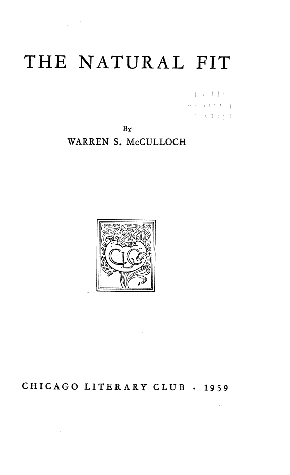

The compression of a life
Love, war, ageing, friendship, the death of friends, the fear of having finished one's work. The poems handle what a scientific paper cannot say without becoming a different kind of paper.
Chicago Literary Club · 1959 · poems read 2 December 1957
Three fits, one voice. McCulloch's only collection of poems — sonnets, songs, jokes, and a love sequence — printed for the Chicago Literary Club in an edition of 600. It is a poetical autobiography, and the clearest evidence that the logician of the neuron wrote to be moved.
Read the plateThe occasion
In December 1957 McCulloch read a selection of his poems, mostly sonnets, to the Chicago Literary Club. The Club printed them in October 1959 as The Natural Fit: forty-four pages, six hundred copies, sent to friends at Christmas. It was his only published collection.
The reception was delight and surprise. Heinrich Klüver wrote that he was glad at last to meet “Warren #2” — the other McCulloch, the one who had been writing poems all along. John F. Fulton called the book a “poetical autobiography.” The phrase is exact: the poems are arranged roughly chronologically, and they trace a life through love, war, ageing, friendship, and the stubborn hope of making one world out of many.
The title
The title has three doors. In Middle English a fit (or fytte) is a part or section of a poem. In medicine a fit is a paroxysm, a sudden seizure. And in ordinary speech a fit is a good join — a thing that sits well in its place.
McCulloch's introduction makes the pun explicit. He divides the book into three fits: The Sophomoric Fit, The Outlandish Fit, and The Natural Fit. The first is named for Boethius, the second for Chaucer, the third for Samuel Johnson. The last section takes its epigraph from Rasselas, where Imlac, the poet, has just finished explaining how difficult it is to be a poet:
“Imlac now felt the enthusiastic fit, and was proceeding to aggrandise his own profession, when the Prince cried out: ‘Enough! thou hast convinced me that no human being can ever be a poet.’”
McCulloch adds that the sonnet's form is difficult, but that the compression of enthusiasm it requires was natural to his way of thinking. The fit is not a mood that passes. It is a discipline that lets the mood become a form.
The form
The book moves from short imagist “hokus” to love lyrics, drinking songs, a war poem, a sequence on communication, a single-sentence sonnet, and a final unpunctuated poem found on his desk. The formal centre is the sonnet: fourteen lines that force a thought to turn. McCulloch's sonnets are not smooth. They are compressed, knotty, sometimes deliberately ugly — the sound of a mind trying to fit a large idea into a small room.
We build our castles in the air, And from the air they tumble down, Unless we carry them up there Until they crack the pate they crown. And we must lug them everywhere, From garden walk to crowded town; We build our castles in the air, And from the air they tumble down.
The poem is a rondeau: the refrain returns, and the return is the point. A castle in the air is only a castle if you carry it up there.
Sweet Language, child of human Loneliness Engendered in the ravished soul of Sound, Long keeper of the keys of paradise, Open it quickly to the dumb heart of man.
The sequence tries to do in verse what McCulloch's neuroscience tried to do in theory: show how a private signal becomes a shared world.
Laboratory · the sonnet forge
This is a model of the sonnet template, not a scan of McCulloch's own lines. Choose a rhyme scheme, loosen the metre, and watch the fourteen lines either lock into a grid or begin to breathe. Then read the last poem in the book, line by line.
Five iambic feet per line: ten positions, alternating light and heavy. The rhyme letters sit in the margin. At high regularity the grid is a machine; at low regularity it becomes a body.
the last poem · click a line
The closing poem of The Natural Fit, as printed in Embodiments of Mind (1965), p. 358. The printed text breaks “in temperance terrible / charged i abide”; it is rejoined here to show the fourteen-line shape.
“He had thought this character was dead, but the other day I found this on my desk, unpunctuated and the ink wet.” That is McCulloch's note before the poem. The “character” is the second of the three men who wore the carcass — the poet he thought he had lost.
The four questions
Love, war, ageing, friendship, the death of friends, the fear of having finished one's work. The poems handle what a scientific paper cannot say without becoming a different kind of paper.
It solves the false choice between exactness and feeling. The sonnet's constraint is a technology for making feeling precise; the scientist's patience is a technology for making precision human.
44 pages, 600 copies, a Christmas gift. It turns the neurophysiologist into a poet in public — not as a hobby, but as another identity through which the same mind could be exact.
The book
The cover is as plain as the 1945 tribute: title, author, Club, year. Inside, the three fits are separated by introductions and title pages; the poems are arranged roughly chronologically; the last section ends with the unpunctuated poem McCulloch found on his desk.
| Author | Warren S. McCulloch |
|---|---|
| Title | The Natural Fit |
| Occasion | Poems read before the Chicago Literary Club, 2 December 1957 |
| Publisher | Chicago Literary Club · printed October 1959 |
| Extent | 44 pages · edition of 600 copies |
| Collected in | Embodiments of Mind (MIT Press, 1965), pp. 319–358 |
| Rights | 1959 pamphlet: search-only at HathiTrust |

Why it matters
It is tempting to treat The Natural Fit as a curiosity: the great cybernetician also wrote sonnets. That is the wrong lesson. The poems are not an interruption of the science; they are the same project in another medium. McCulloch wanted to know how signals become meanings, how a private event becomes a shared world. A poem is that problem made audible.
Read it next to One Word After Another, the 1945 tribute to Robinson where the craft is still being learned, and next to The Past of a Delusion, where McCulloch turns the same suspicion of words on a theory that would not let itself be refuted.